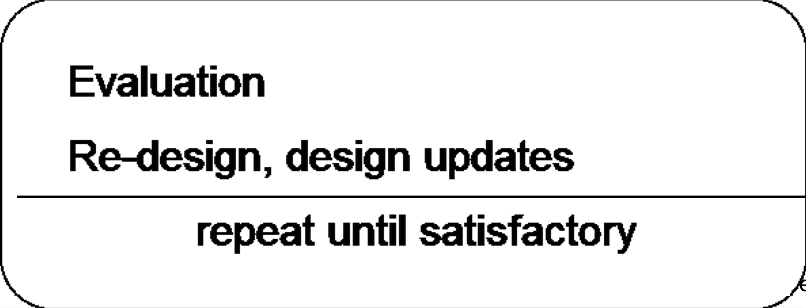

Announced: Fri, Feb 10, 2017
Objective:
Design and implementation of a real-world application, with special focus on UI design.
The UI to your application is the important part of this project. It should apply suitable design guidelines and principles you learned in class.
Steps:
Grading Dimensions:Product idea
Domain analysis:
- user analysis
- task analysis
→ problem scenario
Prototyping
- sketches, mockups
- definition of specific user task sequences (use cases)

Final Implementation
If you have trouble coming up with a project idea of your own, feel free to use and extend this Project Possibility.
Deliverables:
- Monday, Feb 20, 23:59:59 submit project idea on GauchoSpace. You have to be part of a group proposal (3 or 4 students, in exceptional cases fewer or more) OR submit an idea by yourself. Here is an example project idea writeup to clarify the format for this early idea stage.
- Tue, March 21st, 8-11am: Product presentation - walkthrough the functionality and design process (10 minute team presentation).
- Wed, March 22nd, 11:59:59pm: Submit final project materials and documentation:
- Complete code for your project. You are not limited to any Android version and you can use any publicly available libraries / code / artwork / materials as long as you correctly acknowledge all sources. We will make every effort to run your code on our Android devices, but just in case we fail to get it to work, please be prepared to demo it to the TAs on Thursday, March 23rd or Friday, March 24th. We would email your group members by noon on Thursday if we require a demo like that.
- Manual for your product. Document that describes how the product is to be used. Please make use of screen shots here to document all functionality.
- Documentation of the design process. This should be a separate document, giving an overview of the different steps you went through and presenting all documentation/evaluation materials you produced on the way. This includes:
- Documentation of the different stages of your design (see above, with additional material, e.g. sketches, mockups, questionnaires, etc.)
- Evaluation results (qualitative, quantitative). There should be a description on when and how evaluation took place, and a presentation of the results.
- Problem scenario(s) (required). Other scenarios (activity, information, interaction) welcome but not required.
- More detailed use case that drove your iterative design
- A summary of your design decisions and what they were based on.